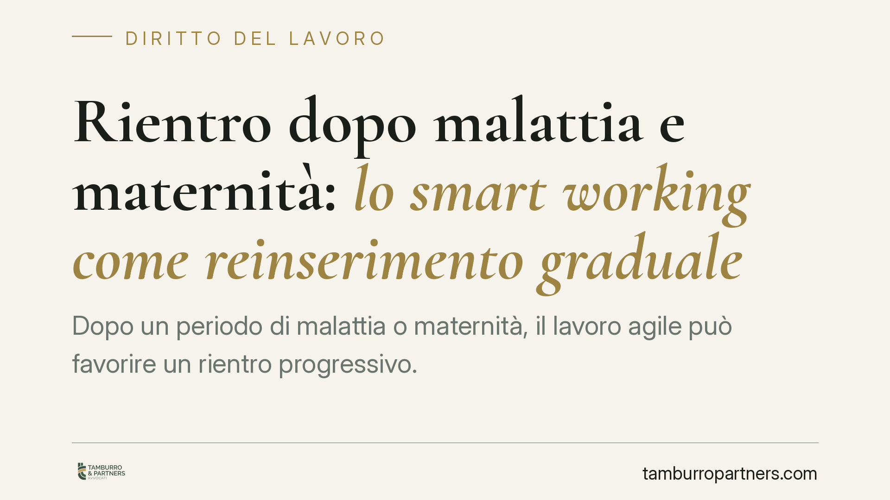

Rientro dopo malattia e maternità: lo smart working come reinserimento graduale
Dopo un periodo di malattia o maternità, il lavoro agile può favorire un rientro progressivo. Non è però un diritto attivabile unilateralmente: serve un accordo scritto, il rispetto degli obblighi di sicurezza e la tutela dei dati sanitari. Vediamo cosa prevede la legge 81/2017 e come impostare correttamente la fase di reinserimento.

Il quadro: lo smart working nasce da un accordo
Il lavoro agile disciplinato dalla legge 22 maggio 2017, n. 81 non è una modalità che il lavoratore può imporre né che il datore può assegnare in autonomia. Gli articoli 18 e 19 lo configurano come frutto di un accordo individuale scritto, che definisce durata, modalità di esecuzione, tempi di riposo e strumenti utilizzati.
Questa impostazione consensuale è centrale nella fase di rientro dopo un evento che ha inciso sulla capacità lavorativa. Lo smart working diventa uno strumento di reinserimento graduale solo se datore e lavoratore ne concordano le condizioni, eventualmente prevedendo una fase iniziale a orario o carico ridotto, alternata alla presenza in sede.
Durata, recesso e la tutela rafforzata dei disabili
L'accordo può essere a termine o a tempo indeterminato. Ai sensi dell'art. 19, comma 2, della legge n. 81/2017, dall'accordo a tempo indeterminato ciascuna parte può recedere con un preavviso non inferiore a 30 giorni.
La stessa norma prevede una tutela rafforzata: nei confronti dei lavoratori disabili ai sensi dell'art. 1 della legge n. 68/1999, il termine di preavviso di recesso da parte del datore è elevato ad almeno 90 giorni, così da consentire un'adeguata riorganizzazione dei percorsi di lavoro. È un dato da tenere presente proprio quando il rientro riguarda una condizione di ridotta capacità.
L'accomodamento ragionevole
Quando il rientro riguarda un lavoratore con disabilità o una condizione di fragilità, entra in gioco l'accomodamento ragionevole: l'obbligo per il datore di adottare misure appropriate per garantire la parità di trattamento, salvo che ciò comporti un onere sproporzionato.
Il principio deriva dalla direttiva 2000/78/CE ed è recepito in Italia dall'art. 3, comma 3-bis, del D.Lgs. n. 216/2003. Lo smart working può rappresentare, in concreto, una di queste misure. La Corte di Giustizia dell'Unione Europea ha più volte ribadito che l'accomodamento va valutato caso per caso e non può essere negato con formule astratte.
Priorità e precedenza per genitori e caregiver
Il tema del rientro dopo la maternità richiama le disposizioni che riconoscono un diritto di priorità all'accesso al lavoro agile. In particolare, hanno titolo preferenziale i genitori con figli fino a dodici anni di età (senza limite in caso di figlio con disabilità) e i lavoratori caregiver ai sensi della legge n. 104/1992.
Si tratta di una priorità, non di un diritto assoluto all'attivazione: il datore deve tenerne conto nella valutazione delle richieste, ma resta ferma la natura consensuale dell'accordo. È comunque un elemento che pesa nella fase di reinserimento post-maternità.
Sicurezza sul lavoro e sorveglianza sanitaria
Anche in modalità agile permangono gli obblighi di tutela della salute. L'art. 22 della legge n. 81/2017 impone al datore di consegnare al lavoratore, con cadenza almeno annuale, un'informativa scritta sui rischi generali e specifici connessi alla modalità di lavoro.
Nel rientro dopo malattia, il ruolo del medico competente è decisivo: la sorveglianza sanitaria e l'eventuale giudizio di idoneità, con prescrizioni o limitazioni, orientano le concrete modalità di reinserimento. Le indicazioni del medico devono trovare riscontro nell'organizzazione del lavoro agile.
Il trattamento dei dati sanitari
Le informazioni relative allo stato di salute rientrano tra le categorie particolari di dati ai sensi dell'art. 9 del Regolamento (UE) 2016/679 (GDPR). Il datore non può conoscere la diagnosi, ma solo l'idoneità e le eventuali limitazioni. La gestione di certificati, giudizi e prescrizioni richiede basi giuridiche adeguate, misure di sicurezza e accessi limitati al personale strettamente necessario.
Cosa fare in concreto
- Formalizzate un accordo scritto dedicato alla fase di rientro, indicando durata, alternanza presenza/remoto ed eventuale gradualità del carico.
- Coinvolgete il medico competente prima di definire le modalità, recependo nel piano di reinserimento le limitazioni o prescrizioni contenute nel giudizio di idoneità.
- Verificate le priorità applicabili (genitori con figli under 12, caregiver, lavoratori fragili) e documentate la valutazione delle richieste.
- Aggiornate l'informativa sui rischi ex art. 22, rispettando la cadenza almeno annuale anche per chi rientra.
- Presidiate il trattamento dei dati sanitari ex art. 9 GDPR, limitando gli accessi e conservando separatamente la documentazione medica.
Per i lavoratori disabili, ricordiamo di applicare il preavviso di recesso di almeno 90 giorni e di valutare lo smart working nell'ottica dell'accomodamento ragionevole.
---
*Contributo informativo a cura di Tamburro & Partners - Avv. Giuseppe Tamburro. Non costituisce parere legale.*
Ogni storia di lavoro ha i suoi tempi.
Se gestisci HR e vuoi un confronto su contenzioso, ispezioni o licenziamenti, scrivi allo studio. Ti rispondiamo entro un giorno lavorativo.